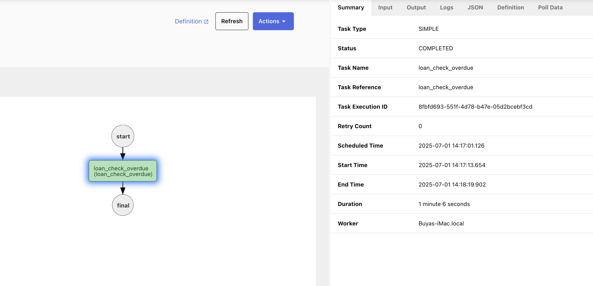

Getting Started with Netflix Conductor
I recently worked with Netflix Conductor, a powerful workflow orchestration engine. Here's what I learned, how it works, and how you can run your first workflow.
🔧 How It Works
- Define a workflow with a list of tasks.
- Write workers that know how to do the tasks.
- Conductor assigns tasks to workers.
- Workers run the task and return status/results.
- Conductor tracks progress and moves to the next step.
📘 Key Concepts
| Concept | Simple Explanation |
|---|---|
| Workflow | Sequence of steps, like a recipe. |
| Task | A single action in a workflow. |
| Worker | Program that performs a task. |
| Input Data | Data passed into a task. |
| Output Data | Result after a task runs. |
| Task Status | Result: COMPLETED, FAILED, etc. |
| HTTP Task | Built-in task to make HTTP requests. |
| Decision Task | Conditional logic (if-else). |
| Sub-workflow | Reusable workflow within another. |
🧪 Step-by-Step: Your First Workflow
1. Define a workflow (JSON)
{
"name": "loan_check_test_workflow",
"tasks": [
{
"name": "loan_check_overdue",
"taskReferenceName": "loan_check_overdue",
"type": "SIMPLE"
}
],
"schemaVersion": 2
}2. Start Conductor with Docker
git clone https://github.com/Netflix/conductor
cd conductor/docker
docker-compose up👨💻 Step 3: Build the Worker in Go
We'll use the Conductor Go SDK to build a simple task worker. Install it
✏️ Create main.go
package main
import (
"log"
"time"
"fmt"
"github.com/conductor-sdk/conductor-go/sdk/client"
"github.com/conductor-sdk/conductor-go/sdk/settings"
"github.com/conductor-sdk/conductor-go/sdk/worker"
)
func loanCheckOverdue(input map[string]interface{}) (map[string]interface{}, error) {
loanID, ok := input["loanId"].(string)
if !ok || loanID == "" {
loanID = "unknown"
}
log.Printf("🔍 Checking overdue status for loan: %s", loanID)
isOverdue := loanID == "1234" // example Id
result := map[string]interface{}{
"loanId": loanID,
"isOverdue": isOverdue,
}
log.Println("✅ Task result:", result)
return result, nil
}
func main() {
log.Println("🚀 Starting Conductor Go Worker...")
apiClient := client.NewAPIClient(
settings.NewAuthenticationSettings("", ""),
settings.NewHttpSettings("http://localhost:8080/api"),
)
taskRunner := worker.NewTaskRunnerWithApiClient(apiClient)
taskRunner.StartWorker("loan_check_overdue", loanCheckOverdue, 1, 1*time.Second)
log.Println("📡 Worker is polling for tasks...")
taskRunner.WaitWorkers()
}🧪 Step 4: Run the Worker
go run main.go✅ Output Example
🚀 Starting Conductor Go Worker...
🔍 Checking overdue status for loan: 1234
✅ Task result: map[loanId:1234 isOverdue:true]🧪 Step 5: Trigger the Workflow
Start the workflow execution with a simple curl command:
curl -X POST http://localhost:8080/api/workflow/loan_check_test_workflow \
-H "Content-Type: application/json" \
-d '{"loanId":"1234"}'📸 UI View

You should see the task complete successfully in the Conductor UI.
That's it for your first end-to-end Conductor workflow and worker in Go!
I'll keep exploring advanced features like sub-workflows and decisions. Let me know if you'd like a walkthrough on anything above!